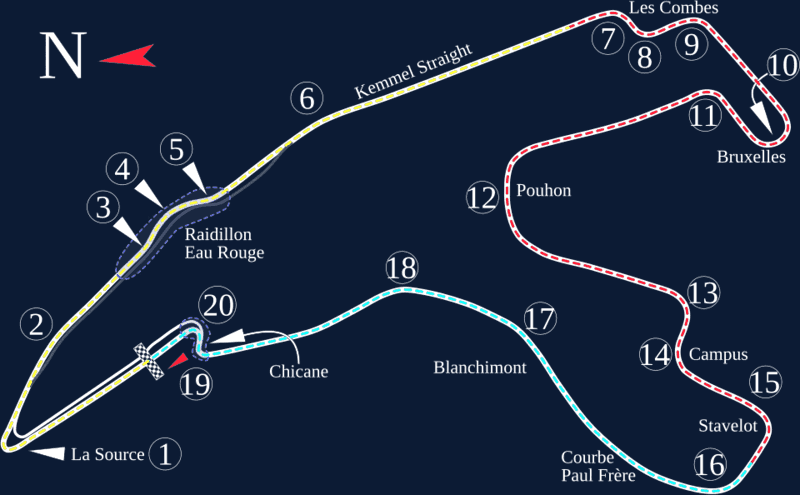

Линия трассы снята с исходного SVG на Wikimedia Commons. Красная точка - машина, движется по ходу гонки со скоростью из графика ниже (ускорено). Сейчас: 0 км/ч. Жёлтые точки - апексы.
О трассе
Самая длинная трасса в подборке. Перепад высот около 100 метров, погода может быть разной на разных концах круга. Связка О-Руж/Радийон проходится почти без сброса, а вот Ля Сурс и Бас-Стоп - самые медленные места.
| Длина круга | 7004 м |
|---|---|
| Поворотов | 19 |
| Макс. скорость | 330 км/ч |
| Рекорд круга | 1:44.701 С. Перес, Red Bull, 2024 |
| Полный газ | - % дистанции |
| Торможение | - % дистанции |
Карта трассы

Карта: «Spa-Francorchamps of Belgium.svg», автор Will Pittenger, Wikimedia Commons, CC BY-SA 3.0.
Апексы
| № | Поворот | Дистанция, м | Скорость в апексе, км/ч | Передача |
|---|
Данные в CSV: apex_spa.csv, телеметрия круга - telemetry_spa.csv.
Телеметрия круга
Пунктир - границы секторов. Сектор 1 начинается от линии старта.